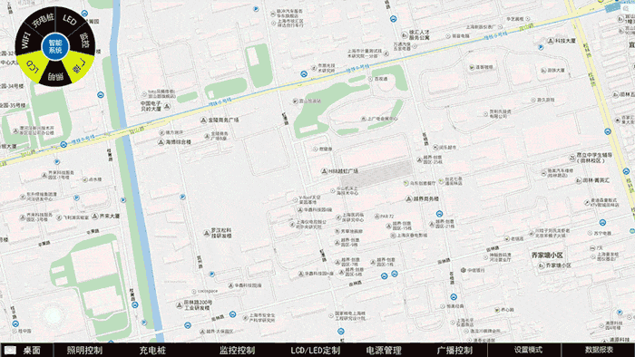

飞乐智能 路灯控制平台创新UI&大数据展示界面

▲▲PC端灯控界面Demo
为飞乐智能的第一代PC端灯控软件设计了一款十分具有新意的UI操作Demo版。最大程度将屏幕留给地图，留给用户。而具体的操作则由一个圆点出来，层层扩展带给用户逻辑清晰，操作自由的新体验。虽然最终这套UI的Demo并没有被采纳，但是申请了专利作为公司的技术储备。
另外在智慧城市大数据如何表达和演示这方面，设计了一些界面效果图,主要表达风格特点。


UI Design